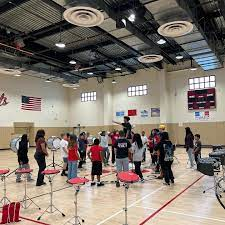
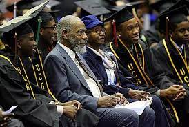

Forrester Louis
Hello, I'm a passionate biology major at the University of California, Riverside (UCR), hailing from the picturesque town of Murrieta, California. Growing up surrounded by the natural beauty of Southern California, I developed a deep fascination with the living world, which eventually led me to pursue a career in biology.
From a young age, I found myself captivated by the diverse ecosystems and wildlife that thrive in our region. Exploring the nearby hills and nature reserves sparked my curiosity about the intricate web of life and the underlying biological processes that sustain it. This early interest laid the foundation for my academic journey in the field of biology.
Now a dedicated student at UCR, I am immersed in a dynamic and stimulating academic environment that fosters both intellectual curiosity and hands-on research opportunities. My coursework delves into various branches of biology, from molecular and cellular biology to ecology and evolution. The faculty's expertise and the university's cutting-edge research facilities have allowed me to engage in meaningful studies that extend beyond the classroom.
One of the highlights of my academic journey has been my involvement in research projects exploring the local flora and fauna. UCR's commitment to environmental sustainability aligns perfectly with my passion for conservation biology. Through field studies and lab work, I've had the privilege of contributing to research initiatives focused on understanding and preserving the unique biodiversity of our region.
Beyond academics, I've actively participated in student organizations related to biology and environmental science. Joining these groups has not only expanded my knowledge but has also provided a platform for collaborative learning and networking with fellow biology enthusiasts. Whether it's organizing nature excursions, participating in outreach programs, or attending scientific conferences, these experiences have enriched my academic life and allowed me to share my love for biology with others.
My hometown, Murrieta, has played a crucial role in shaping my identity and influencing my academic pursuits. The close-knit community and proximity to nature have instilled in me a sense of responsibility toward environmental stewardship. I am driven by a desire to contribute to the understanding and preservation of our natural world, both at the local and global levels.
Looking ahead, I aspire to pursue advanced studies in the field of ecology and conservation biology, with the goal of making meaningful contributions to the sustainable management of ecosystems. My journey as a biology major at UCR is a testament to the power of curiosity, education, and community in shaping a future dedicated to the exploration and preservation of the wonders of life on Earth.
Experience
Patient Care Volunteer
• Assist nursing staff with various duties.
• Take vitals of patients if needed
• Spend time with patients and keep them company
Blood Donor Ambassador
• Checking donors in for their appointments
• Making sure they are okay after they get their blood drawn
Assistant
• Helped the Drumline
• Assisted in teaching the kids their music
• Roughly 500 hours spent practicing
• Went to competitons with them
Education
UC Riverside
Portfolio

